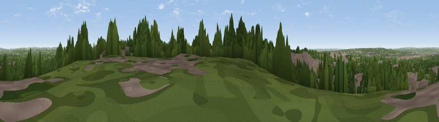

Viewpoint near West End
#36015 in England · top 56% of its area beats it · near West EndThe view, rendered

A 360° render of this exact spot computed from the terrain model, tree cover and land cover — summer colours, afternoon light, calibrated against photographs of famous viewpoints. Real trees, hedges and buildings will differ in detail.
The panorama
Grey silhouette: terrain skyline in each direction (720 bearings, Earth curvature and refraction included). Dashed green: skyline with trees (+15 m) and buildings (+8 m) as obstacles. Blue strip: how far the ground is visible on each bearing.
Where the view opens
Wedge length = distance to the farthest visible ground on that bearing (vegetation-aware). Rings at 10, 25 and 50 km.
What fills the view
43% woodland · 39% built-up · 16% grassland · 2% cropland ·
Angular shares of the visible panorama (visual magnitude), not map area. Landscape diversity 0.50 (0–1 Shannon).
Key numbers
More beautiful places nearby
The staircase of upgrades: each row has a higher view potential than everything closer. Driving times are estimates from straight-line distance, calibrated against real road routing — check an actual route before setting out.
| Place | Direction | Drive | Score |
|---|---|---|---|
| Viewpoint near West End | W · 2 km | ~4 min | 38.3 |
| Viewpoint near Lower Swanwick | SE · 4 km | ~10 min | 42.4 |
| Viewpoint near Upton | WNW · 9 km | ~18 min | 46.3 |
| Cockscomb Hill | NNE · 11 km | ~20 min | 50.4 |
| Viewpoint near Owslebury | NE · 11 km | ~21 min | 52.3 |
| Viewpoint near Droxford | ENE · 14 km | ~25 min | 61.7 |
| Cheesefoot Head | NNE · 15 km | ~27 min | 62.0 |
| Viewpoint near Chilcomb | NNE · 15 km | ~27 min | 63.9 |
50.92474, -1.34369 · source: screening · position refined by local search. Computed location — check access rights before visiting.